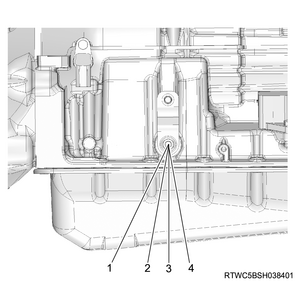
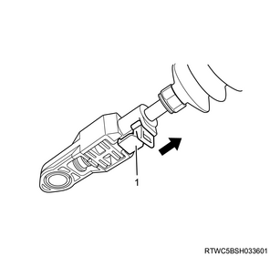
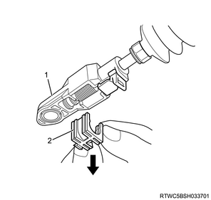
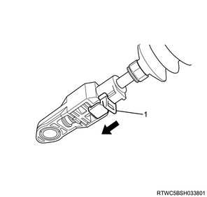
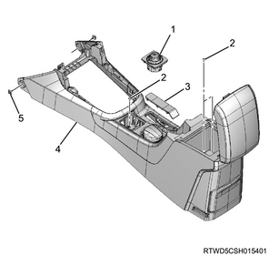

Automatic transmission control cable installation (TB-50LS)
1. Automatic transmission control cable installation
1. Connect the automatic transmission control cable to the shift lever plate sub assembly.
Note
- Install the automatic transmission control cable toward the inside of the cabin from the bottom of the vehicle.
- Push the automatic transmission control cable into the shift lever plate sub assembly.
2. Install the clip to the bracket.
Note
- Install the clip of upper side on the marking of the automatic transmission control cable.
- Install the clip to connect the automatic transmission control cable.
3. Install the clip to the bracket.
Note
- Install the clip of LH side on the marking of the automatic transmission control cable.
- Install the clip to connect the automatic transmission control cable.
2. Automatic transmission control cable adjustment
1. Adjust the automatic transmission control cable.
Caution
- Adjust the automatic transmission control cable when replace the automatic transmission control cable.
Note
- Check that the selector lever is in the N position.
- Check that the transmission is in the N position.

- P
- R
- N
- D
Note
- Slide the cover in the direction indicated by the arrow.

- Cover
Note
- Use an ordinary screwdriver to move the lock piece from the position indicated by the arrow.
- Continue to move the lock piece until the adjuster position begins to change.

- Adjuster
- Lock piece
2. Connect the automatic transmission control cable to the select control lever.
Note
- Insert the lock piece to the adjuster.
- Slide the cover on the adjuster and secure lock piece.

- Cover
Note
- Press the select lever knob button 5 times, and then check that the select lever moves smoothly to each of its positions.
- Check that the shift position indicated by the selector lever and the actual shift position are the same.
3. Console box installation
1. Install the console box to the floor.
Note
- Install the 2 clips and the 1 screw.
- Open the console box cover and install 2 screws.
- Install the parking brake cover to the console box.
- Connect the 4WD switch connector.
2. Install the 4WD switch to the console box.

- 4WD switch
- Screw
- Parking brake cover
- Console box
- Clip
3. Install the shift console cover to the console box.
Note
- Connect the cigarette lighter connector.

- Shift console cover
- Cover (2WD models)
- 4WD switch (4WD models)
4. Battery ground cable connect
1. Connect the battery ground cable to the battery.